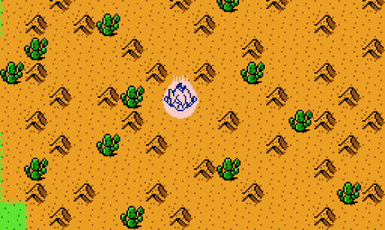
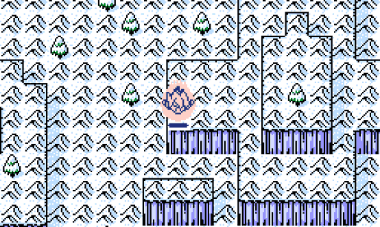
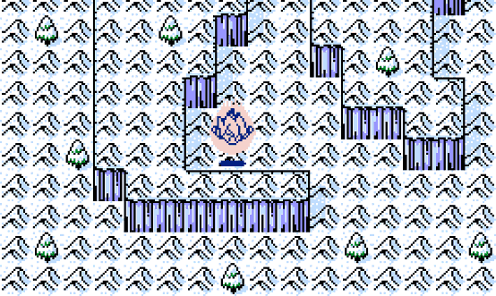
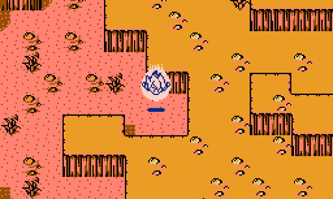
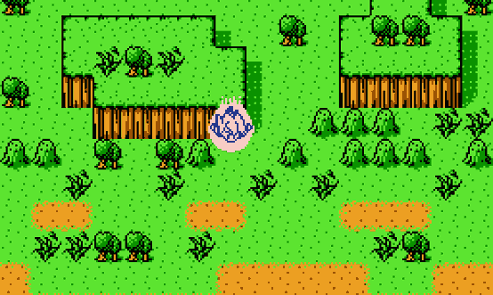

悟空Ｚ
雖然台灣通常稱「七龍珠Ｚ」，但我唸小學時班上同學都稱「悟空Ｚ」，為了懷舊所以沿用下來～
ドラゴンボールＺ強襲！サイヤ人
第一關先到龜仙屋，再到布馬家拿龍珠雷達，即可消除通往拉帝茲處的石頭。
ドラゴンボールＺII激神フリーザ!!
第一關最佳對話選項，進入太空船時，先回答第二項，其它回答第一項。進入捷徑，則全部回答第一項。
悟空 50 倍重力特訓完，會在路上進入某個星球，解決敵人後，有機率獲得青蛙卡。
金手指
模擬器記憶體位址 041D ~ 042D 用來保存卡片資料，以下是代碼、卡片與介紹：
128 わかもの 納美克星少年，會加入戰鬥。
129 カリンさま 卡琳大人，全員 HP 和 BE 全滿。
130 せんず 仙豆，單人 HP 和 BE 全滿。
131 プーアル 普亞魯，交換一張牌。
132 ブルマ 布瑪，每回合可以補一次血。
133 ポルンガ 納美克星神龍，可許三個願望。
134 ミスターポポ 波波，讓敵人無法使用必殺技。
135 じいちゃん 爺爺，將敵人封住。
136 エンマさま 閻王大人，將卡片戰鬥力變成 Z。
137 うらないババ 占卜婆婆，將卡片防禦力變成 Z。
138 かいおうさま 界王大人，提升戰鬥能力。
139 チチ 琪琪，將卡片變成「必」。
140 ウーロン 烏龍，變換所有牌。
141 スカウター 偵察器，戰鬥時可偵測敵人數據，抽牌時可顯示陷阱。
142 ドラゴンレーダー 龍珠雷達。
143 カエル 納美克星蛙，悟空被基紐換身時會自動使用的道具。
144 デンデ 丹丹，補血量比布瑪高。
145 １シンチュウ 一星球。
146 ２シンチュウ 二星球。
147 ３シンチュウ 三星球。
148 ４シンチュウ 四星球。
149 ５シンチュウ 五星球。
150 ６シンチュウ 六星球。
151 ７シンチュウ 七星球。
建議從 041F 開始改，因為 041D 和 041E 預設為「ブルマ、デンデ」和「ドラゴンレーダー」，不應該變動。
擁有所有消耗性物品（不含任務道具）
VirtuaNES
; ドラゴンボールＺ II 激神フリーザ!!
#1 041F-04-80818283 所有消耗性物品 1/3
#1 0423-04-86878889 所有消耗性物品 2/3
#1 0427-04-8A8B8C8D 所有消耗性物品 3/3
複製貼上到純文字文件，並且以 *.vct 副檔名儲存，然後在 VirtuaNES 的 Tool - Cheat code - Load 載入使用。
Nestopia
<?xml version="1.0" encoding="UTF-8"?>
<cheats version="1.0">
<cheat enabled="1">
<address>0x041F</address>
<value>0x80</value>
</cheat>
<cheat enabled="1">
<address>0x0420</address>
<value>0x81</value>
</cheat>
<cheat enabled="1">
<address>0x0421</address>
<value>0x82</value>
</cheat>
<cheat enabled="1">
<address>0x0422</address>
<value>0x83</value>
</cheat>
<cheat enabled="1">
<address>0x0423</address>
<value>0x85</value>
</cheat>
<cheat enabled="1">
<address>0x0424</address>
<value>0x86</value>
</cheat>
<cheat enabled="1">
<address>0x0425</address>
<value>0x87</value>
</cheat>
<cheat enabled="1">
<address>0x0426</address>
<value>0x88</value>
</cheat>
<cheat enabled="1">
<address>0x0427</address>
<value>0x89</value>
</cheat>
<cheat enabled="1">
<address>0x0428</address>
<value>0x8A</value>
</cheat>
<cheat enabled="1">
<address>0x0429</address>
<value>0x8B</value>
</cheat>
<cheat enabled="1">
<address>0x042A</address>
<value>0x8C</value>
</cheat>
</cheats>
複製貼上到純文字文件，並且以 *.xml 副檔名儲存，然後在 Nestopia 的 Options - Cheats - Permanent Codes 按 Import.. 載入。
ドラゴンボールＺIII烈戦人造人間
操作
按 SELECT + START 可以設定全部 3D 式戰鬥。
攻略
比克＋悟飯＋克林
東南小屋→都市找やくざいし→東南恐龍
中央洞口凹處→西北洞口→中央洞口凹處
東北守衛→西北洞口→守衛左下凹處→堡壘
達爾
西方都市邊界→西北電廠→西南電廠→西方都市
修練小屋練等級→西北堡壘
天津飯＋餃子＋飲茶＋克林
東南小屋→北方小屋→西北小屋→西南小屋→東南小屋下面的敵人→堡壘
修行
略。
悟空＋比克＋悟飯
西南飛艇→三回合內打敗クウラ的話悟空不會心臟病
全員
生化人藏匿的位置，在西南洞口往上 23 格（圓形的樹下面 1 格），再往左 3 格。
金手指
04EC 仙豆の数
03DA ~ 03DB 敵１体目の残りＨＰ
03F2 ~ 03F3 敵２体目の残りＨＰ
040A ~ 040B 敵３体目の残りＨＰ
0422 ~ 0423 敵４体目の残りＨＰ
034E ~ 034F ゴハンの経験値
031E ~ 031F ピッコロの経験値
0366 ~ 0367 クリリンの経験値
037E ~ 037F ヤムチャの経験値
0396 ~ 0397 テンシンハンの経験値
03AE ~ 03AF チャオズの経験値
0336 ~ 0337 べジータの経験値
0306 ~ 0307 ゴクウの経験値
03C6 ~ 03C7 トランクスの経験値
0311 = 80 ゴクウ KI ねる
0329 = 80 ピッコロ KI ねる
0341 = 80 ベジータ KI ねる
0359 = 80 ゴハン KI ねる
0371 = 80 クリリン KI ねる
0389 = 80 ヤムチャ KI ねる
03A1 = 80 テンシンハン KI ねる
03B9 = 80 チャオズ KI ねる
03D1 = 80 トランクス KI ねる
ドラゴンボールＺ外伝サイヤ人絶滅計画
這代沒有經驗值的概念，只有通關時提昇牌數，做為能力的提升而已，於是打怪變成沒有意義的事，純粹阻擾玩家而已。
必殺技也不是消耗 MP 選擇要放哪招，而是靠手上牌的組合施展出來。偏偏牌的種類太多，變成要靠運氣才能放出想要的招式，結果連「安全時放放小招，危急時再放絕招」的策略性都沒有，你可能安全時拿到「拳拳體爆光」五張牌結果不放白不放，危急時七張牌都是「拳」和「蹴」只好死一死～
打怪練功變強的要素沒了，由玩家決定技能的策略性也沒了，一切都憑運氣走下去，使得這款遊戲毫無 RPG 的樂趣，跟擲骰子決定一切的桌遊一樣，難玩到不行。
跟二代努力把角色練起來，就可以享受變強的樂趣，英勇擊倒弗力扎，所以破關了還意猶未盡再破兩三次相比，這款外傳自小時候勉強僥倖破過一次，就不想再玩了，直到現在都沒再破過第二次～
注意
這遊戲適合用 Nestopia 玩，因為在 VirtuaNES 對話欄會晃。
攻略
西の都
遊戲一開始就強迫進來的地方，然後和怪物戰鬥。
悟空の家
補血的地方。
カメハウス
像 RPG 酒館一樣打探情報的地方。
グランドアポロン
1、往東南方走，進入都市和人對話。
2、我西南方走，到山那兒。
3、追著鳥走。
4、回西南方的山。
西の砂漠
1、往南走，進入金字塔。
2、往北走，去綠洲和居民對話。
3、回金字塔，往迷宮盡頭的牆走，會跳出訊息。
4、往東偏南走，到砂丘那兒，在迷宮盡頭遇見木乃伊，要抓他 12 次。
ブンブク島
1、往西南方走，進入地洞。（有白色小屋和湖的右下方）
2、往東南走，進入火山。
3、離開這張地圖，到西都按カプセルコーポレーション，然後累積打斷 15 根木板。
4、回ブンブク島，往南偏西走，進入火山。
ブンブク島
1、往西走，挑戰一隻紅色怪物。
2、往東南走，在整塊大陸旁有一小塊陸地，過去吧。
氷の大陸
1、往東南走，進入工業地。
2、重新進來一次氷の大陸。
3、往南偏西走，到大岩塊那兒。
西の都
1、選トンガリタワー。
2、按カプセルコーポレーション，拿龍珠雷達。按そこへでる離開，用龍珠雷達，到西の砂漠找 3 星球，氷の大陸找 6 星球和 7 星球，グランドアポロン找 1 星球，找到四顆龍珠後，在グランドアポロン克林家拿 4 星球。（這遊戲的龍珠雷達設計不良，方位不夠精準，所以請參考圖片。）
3、回西都，按ひととはなす→ピラフ，然後到ブンブク島用龍珠雷達找最後的龍珠。
4、到ブンブク島，往西南走，到大岩塊那兒拿リキニウム。
5、回西都，按カプセルコーポレーション，會飛往宇宙。





クーン星
1、往西南方走，去很長的塔頂。
2、往西南方走，進去洞穴。
3、重新進來クーン星。（按 B 可切換世界地圖）
4、前往西南不遠處的都市，和パイレじん１對話。
オウター星
1、往西偏南走，進入先前在クーン星步驟 3 時看到的宇宙船，然後累積打斷 15 根木板。
2、回クーン星西南不遠處的都市，和パイレじん２對話。
3、回オウター星，到宇宙船東北不遠處，一塊被圍起來的陸地上，和居民對話。
4、往西南走，進入漩渦。
5、再回クーン星和パイレじん２對話。
6、回オウター星的漩渦。
暗黒惑星
1、先解決分散四處的敵人。
2、密室的門打開後，前往對決 BOSS！
3、若十回合內擊敗 BOSS，破關畫面後，會出現真正的最終頭目～
招式
ゴクウ
拳光 光体 爆爆 体爆光 瞬瞬投投 拳分拳分 拳拳拳光 拳拳体爆光
ゴハン
拳光 光気気 気瞬爆 気瞬光 体爆光 瞬瞬分爆 拳拳光気気
ピッコロ
拳光 瞬光 爆爆光 光光爆 拳拳斬投 瞬瞬分爆 気気体体爆 分分分爆投
トランクス
拳光 気体投 気瞬爆 瞬瞬気斬 瞬瞬分爆 拳拳気体投
ベジータ
拳光 拳気 分光 気爆 蹴蹴光 体斬斬 気投斬 拳瞬爆 爆爆蹴拳 爆爆光光光
金手指
Nestopia
<?xml version="1.0" encoding="UTF-8"?>
<cheats version="1.0">
<cheat enabled="1">
<address>0x02D9</address>
<value>0x0F</value>
<description>悟空生命 9999 [1/2]</description>
</cheat>
<cheat enabled="1">
<address>0x02DA</address>
<value>0x27</value>
<description>悟空生命 9999 [2/2]</description>
</cheat>
<cheat enabled="1">
<address>0x02DC</address>
<value>0x07</value>
<description>悟空牌數 7</description>
</cheat>
<cheat enabled="1">
<address>0x0593</address>
<value>0xFF</value>
<description>悟空必殺技全開</description>
</cheat>
<cheat enabled="1">
<address>0x0309</address>
<value>0x1C</value>
<description>悟飯生命 9500 [1/2]</description>
</cheat>
<cheat enabled="1">
<address>0x030A</address>
<value>0x25</value>
<description>悟飯生命 9500 [2/2]</description>
</cheat>
<cheat enabled="1">
<address>0x030C</address>
<value>0x07</value>
<description>悟飯牌數 7</description>
</cheat>
<cheat enabled="1">
<address>0x0599</address>
<value>0xFF</value>
<description>悟飯必殺技全開</description>
</cheat>
<cheat enabled="1">
<address>0x02E9</address>
<value>0x1B</value>
<description>比克生命 7000 [1/2]</description>
</cheat>
<cheat enabled="1">
<address>0x02EA</address>
<value>0x58</value>
<description>比克生命 7000 [2/2]</description>
</cheat>
<cheat enabled="1">
<address>0x02EC</address>
<value>0x07</value>
<description>比克牌數 7</description>
</cheat>
<cheat enabled="1">
<address>0x0595</address>
<value>0xFF</value>
<description>比克必殺技全開</description>
</cheat>
<cheat enabled="1">
<address>0x0319</address>
<value>0x58</value>
<description>特南克斯生命 7000 [1/2]</description>
</cheat>
<cheat enabled="1">
<address>0x031A</address>
<value>0x1B</value>
<description>特南克斯生命 7000 [2/2]</description>
</cheat>
<cheat enabled="1">
<address>0x031C</address>
<value>0x07</value>
<description>特南克斯牌數 7</description>
</cheat>
<cheat enabled="1">
<address>0x059B</address>
<value>0xFF</value>
<description>特南克斯必殺技全開</description>
</cheat>
<cheat enabled="1">
<address>0x02F9</address>
<value>0x1E</value>
<description>達爾生命 7700 [1/2]</description>
</cheat>
<cheat enabled="1">
<address>0x02FA</address>
<value>0x14</value>
<description>達爾生命 7700 [2/2]</description>
</cheat>
<cheat enabled="1">
<address>0x02FC</address>
<value>0x07</value>
<description>達爾牌數 7</description>
</cheat>
<cheat enabled="1">
<address>0x0597</address>
<value>0xFF</value>
<description>達爾必殺技全開</description>
</cheat>
</cheats>
複製貼上到純文字文件，並且以 *.xml 副檔名儲存，然後在 Nestopia 的 Options - Cheats - Permanent Codes 按 Import.. 載入。
補充
下面的修改只適合重頭開始時使用，若在遊戲中途使用，會把任務道具覆蓋掉，導致無法順利進行下去：
<?xml version="1.0" encoding="UTF-8"?>
<cheats version="1.0">
<cheat enabled="1">
<address>0x041B</address>
<value>0x0D</value>
<description>道具欄 1 テレポト</description>
</cheat>
<cheat enabled="1">
<address>0x041C</address>
<value>0x0C</value>
<description>道具欄 2 おいはらう</description>
</cheat>
<cheat enabled="1">
<address>0x041D</address>
<value>0x0A</value>
<description>道具欄 3 ひっさつわさ</description>
</cheat>
<cheat enabled="1">
<address>0x0466</address>
<value>0x08</value>
<description>第一張牌點數</description>
</cheat>
</cheats>
ドラゴンボールＺ激闘天下一武道会
操控
A+B 必殺技
上+B 飛行